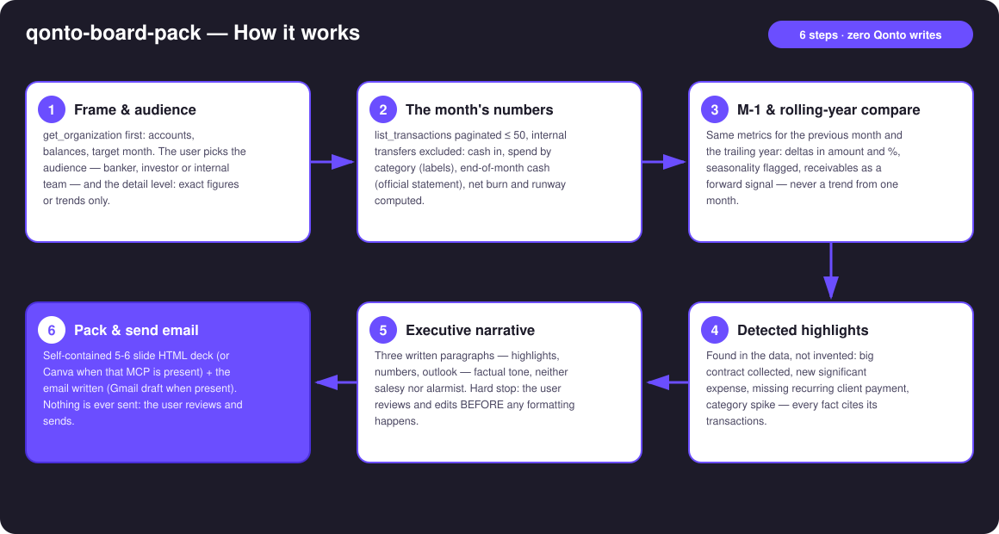
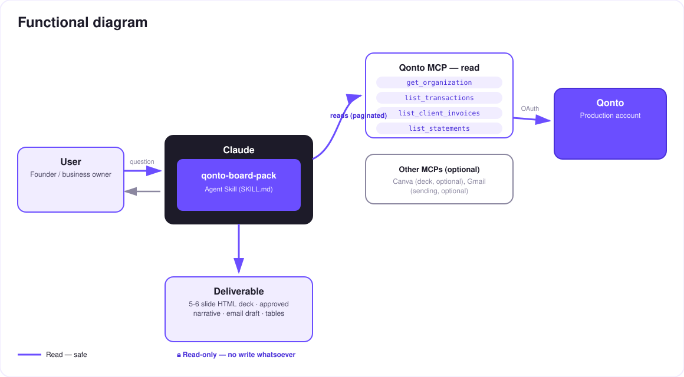

The monthly investor update, ready before your coffee gets cold — numbers, highlights, narrative, deck and email.
The monthly investor/banker update is the task every founder postpones to the last evening — then rushes, half from memory. One prompt → the complete pack, while you watch:
Cash in, spend by category, end-of-month cash (official statement), net burn and runway — from the real Qonto account.
M-1 and rolling year: deltas in amount and %, seasonality flagged, receivables as a forward signal.
Big contract collected, new significant expense, missing recurring client — every fact cites its transactions.
3 factual paragraphs you review BEFORE formatting, then a 5-6 slide HTML deck (or Canva) + the send email (Gmail draft).
And confidentiality is a feature: your banker, your investors and your team don't get the same pack — you pick the audience and the detail level.
| Prerequisite | Detail | Required |
|---|---|---|
| Qonto production account | Adapts to any organization — get_organization first, nothing hardcoded | ✅ |
| Country | Every Qonto country (FR, DE, ES, IT, AT, NL, BE, PT) — financial facts are universal; only currency formatting and wording adapt | ℹ️ detected |
| Qonto MCP connected | Official connector (claude.ai / Claude Desktop), OAuth login | ✅ |
| ≥ 2 months of history | Below that: the month's numbers only, comparisons skipped and said so (≥ 12 months for the rolling year) | ⭕ |
| Canva MCP | Deck exported to Canva — detected dynamically, self-contained HTML deck otherwise | ⭕ optional |
| Gmail MCP | Email draft in the mailbox — detected dynamically, paste-ready text otherwise | ⭕ optional |

settled_at, cross-checked with emitted_atlist_cash_flow_categories returns 403 on the claude.ai connector); untagged spend lands in "Other", share disclosedlist_statements) when it exists, computed otherwise — the method is always stated
Nothing ever ships itself: the skill is read-only on Qonto — no write, ever. The only outputs are a local file (the HTML deck) and a draft (Gmail). The narrative always goes through your review before formatting, and you do the sending. That's the product, not friction.
| Audience | What they want | Pack content | Detail level |
|---|---|---|---|
| Banker | Stability: the account is healthy, obligations are covered | Cash, inflows, expense coverage, regularity | Exact figures |
| Investor | Trajectory: growth, controlled burn, runway | Highlights, M-1/YoY growth, burn & runway, outlook | Exact or trends — your call |
| Internal | Everything | The full pack, unfiltered, detailed spend included | Everything |
| # | Slide | Content |
|---|---|---|
| 1 | Cover | Organization · month · audience |
| 2 | Highlights | 2–4 detected facts, tied to transactions |
| 3 | Key figures | Cash in · spend · EoM cash · burn/runway, with M-1 deltas |
| 4 | Spend by category | Label breakdown, "untagged" share disclosed |
| 5 | Cash & runway | Rolling 12-month curve, runway when burn > 0 |
| 6 | Outlook | The user-approved "outlook" paragraph |
Self-contained deck: pure CSS, light/dark theme, zero external dependencies — it opens anywhere, forever.
| Output | Format | When |
|---|---|---|
| Conversation reply | Markdown tables (figures + deltas, spend, highlights) + the 3-paragraph narrative | Always — the baseline |
| Self-contained HTML deck | 5–6 slides, pure CSS, light/dark, zero dependencies | When the host renders files (claude.ai artifacts, Claude Desktop, Claude Code); fallback to tables |
| Canva export | Design generated through the Canva MCP | When the Canva MCP is present |
| Send email | Gmail draft (never sent) or paste-ready text | Gmail present → draft; otherwise text |
The ≤ 3-minute demo attached to the PR walks through: the update postponed for three days → one prompt → numbers, highlights, narrative → one adjective fixed live → deck and email draft ready before the coffee is finished. It runs live on a real production account.
| Idea | Effort | Note |
|---|---|---|
| Pack history: deltas against last month's pack ("what we told them last time") | Medium | Session memory or local folder |
| User-declared business KPIs (MRR, active customers) | Low | Merged into the key-figures slide |
| Calendar reminder "your monthly pack is ready to generate" | Low | Calendar MCP detected dynamically |
| Bilingual packs (FR deck for the banker, EN for investors) | Low | Same data, two narratives |